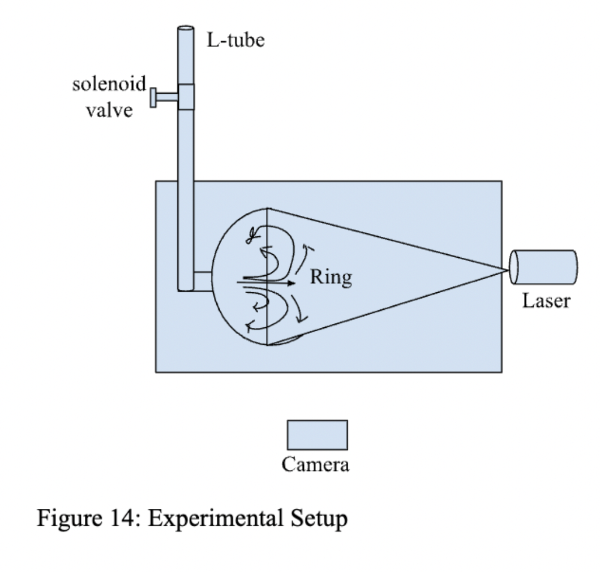
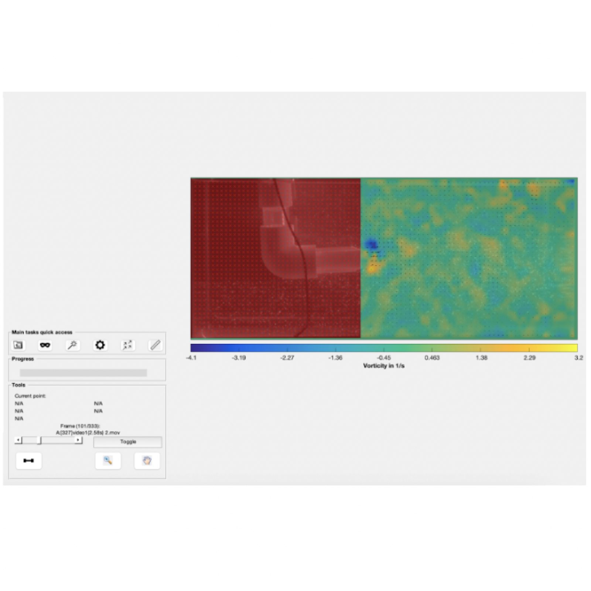
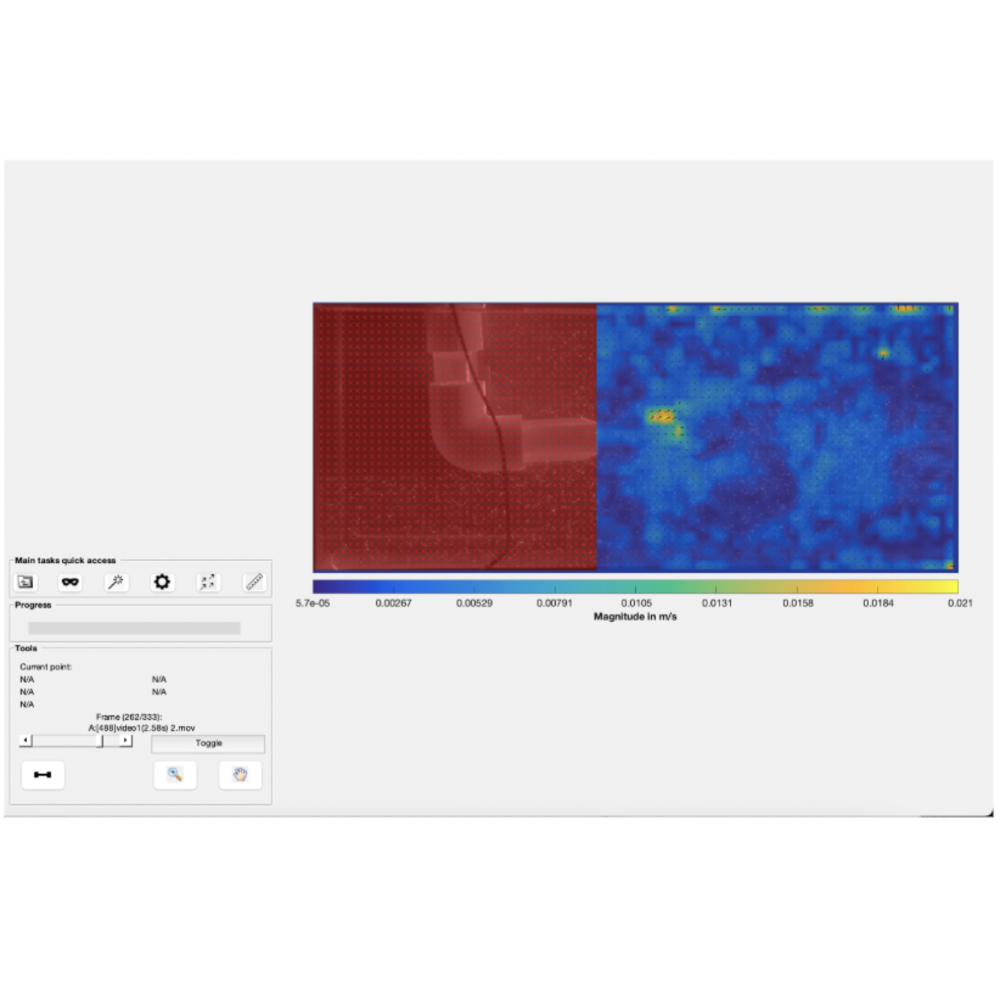
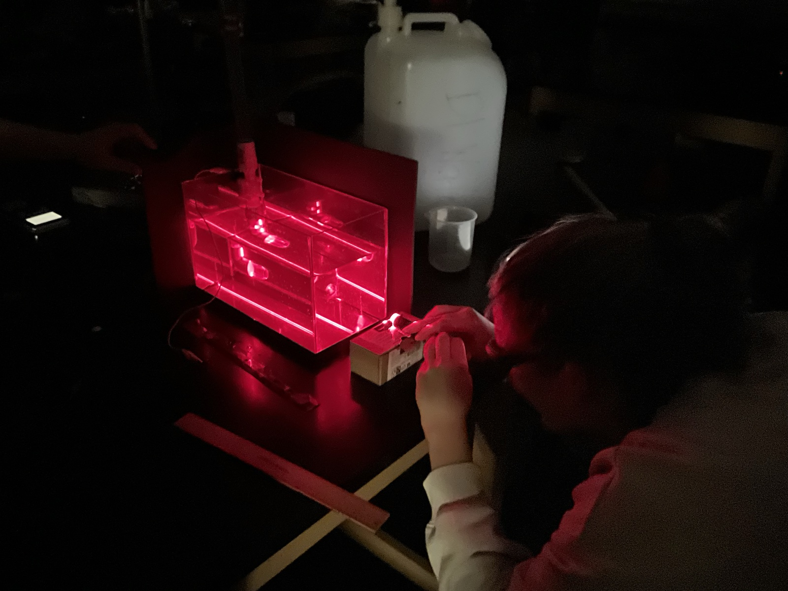

Lab — Fluid Particle Analysis
This lab investigated the behavior of vortex rings and illustrated their velocity and vorticity fields using the Particle Image Velocimetry (PIV) method.

A vortex ring is a toroidal region of swirling fluid that moves through a still medium as a result of the self-induced velocity of its vorticity field. This phenomenon is commonly observed in flows such as smoke rings and wingtip vortices produced by aircraft, and it provides important insight into the principles governing unsteady and three-dimensional fluid dynamics.


